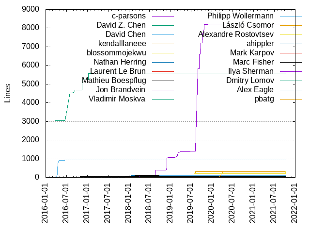
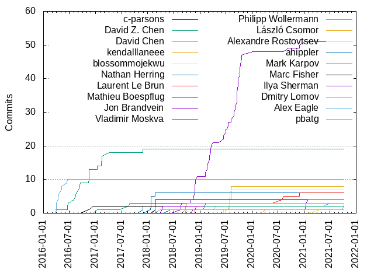

Authors
| Author | Commits (%) | + lines | - lines | First commit | Last commit | Age | Active days | # by commits |
|---|
| c-parsons | 51 (30.36%) | 8219 | 9402 | 2018-08-20 | 2021-01-06 | 869 days, 20:33:54 | 42 | 1 |
| David Z. Chen | 19 (11.31%) | 5601 | 522 | 2016-03-25 | 2017-11-27 | 611 days, 21:58:32 | 15 | 2 |
| David Chen | 10 (5.95%) | 933 | 184 | 2016-03-30 | 2016-06-15 | 76 days, 20:45:08 | 7 | 3 |
| kendalllaneee | 8 (4.76%) | 322 | 32 | 2019-07-03 | 2019-08-09 | 37 days, 1:29:09 | 5 | 4 |
| blossommojekwu | 7 (4.17%) | 215 | 12 | 2019-06-14 | 2019-08-07 | 53 days, 23:51:32 | 5 | 5 |
| Nathan Herring | 6 (3.57%) | 98 | 174 | 2018-01-18 | 2018-02-22 | 35 days, 1:50:45 | 3 | 6 |
| Laurent Le Brun | 6 (3.57%) | 64 | 56 | 2018-11-27 | 2020-12-01 | 734 days, 16:19:22 | 6 | 7 |
| Mathieu Boespflug | 4 (2.38%) | 114 | 35 | 2018-02-22 | 2018-02-22 | 0:04:45 | 1 | 8 |
| Jon Brandvein | 4 (2.38%) | 127 | 39 | 2018-11-16 | 2021-01-29 | 804 days, 22:55:39 | 3 | 9 |
| Vladimir Moskva | 3 (1.79%) | 6 | 6 | 2017-01-10 | 2017-08-29 | 230 days, 20:10:25 | 3 | 10 |
| Philipp Wollermann | 3 (1.79%) | 112 | 115 | 2018-09-28 | 2021-06-30 | 1006 days, 6:04:37 | 3 | 11 |
| László Csomor | 3 (1.79%) | 53 | 50 | 2018-09-24 | 2018-10-02 | 7 days, 23:28:07 | 2 | 12 |
| Alexandre Rostovtsev | 3 (1.79%) | 334 | 47 | 2021-04-22 | 2021-10-06 | 166 days, 22:33:01 | 3 | 13 |
| ahippler | 2 (1.19%) | 14 | 7 | 2017-11-27 | 2017-11-27 | 0:00:36 | 1 | 14 |
| Mark Karpov | 2 (1.19%) | 3 | 3 | 2018-02-22 | 2018-02-22 | 0:00:29 | 1 | 15 |
| Marc Fisher | 2 (1.19%) | 52 | 15 | 2016-11-12 | 2016-12-13 | 31 days, 9:39:20 | 2 | 16 |
| Ilya Sherman | 2 (1.19%) | 72 | 1 | 2018-04-10 | 2018-04-17 | 6 days, 23:47:22 | 2 | 17 |
| Dmitry Lomov | 2 (1.19%) | 8 | 5 | 2018-06-12 | 2019-02-06 | 238 days, 23:34:05 | 2 | 18 |
| Alex Eagle | 2 (1.19%) | 77 | 8 | 2018-03-26 | 2021-10-04 | 1287 days, 23:32:09 | 2 | 19 |
| pbatg | 1 (0.60%) | 296 | 296 | 2020-04-06 | 2020-04-06 | 0:00:00 | 1 | 20 |
These didn't make it to the top: davidstanke, Yun Peng, Yiting Wang, Xùdōng Yáng, Travis Cline, Todd Foggoa, Tiago Quelhas, Thomas Van Lenten, Taras Tsugrii, Samuel Giddins, Samer Masterson, Sam Guymer, Paul Gschwendtner, Michajlo Matijkiw, Max Vorobev, Kristina Chodorow, Kristina, Kevin Gessner, Jingwen, Jin, Jeremy Elbourn, Jakob Buchgraber, Ivo List, Irina Iancu, Googler, David Decotigny, Chris Rebert, Andrew Z Allen
Only top 20 authors shown
Only top 20 authors shown
| Month | Author | Commits (%) | Next top 5 | Number of authors |
|---|
| 2021-10 | Alexandre Rostovtsev | 1 (50.00% of 2) | Alex Eagle | 2 |
| 2021-09 | Samuel Giddins | 1 (100.00% of 1) | | 1 |
| 2021-07 | Chris Rebert | 1 (50.00% of 2) | Alexandre Rostovtsev | 2 |
| 2021-06 | Philipp Wollermann | 1 (100.00% of 1) | | 1 |
| 2021-05 | Max Vorobev | 1 (100.00% of 1) | | 1 |
| 2021-04 | Alexandre Rostovtsev | 1 (100.00% of 1) | | 1 |
| 2021-01 | Jon Brandvein | 3 (75.00% of 4) | c-parsons | 2 |
| 2020-12 | c-parsons | 1 (50.00% of 2) | Laurent Le Brun | 2 |
| 2020-11 | Ivo List | 1 (100.00% of 1) | | 1 |
| 2020-09 | c-parsons | 1 (50.00% of 2) | Thomas Van Lenten | 2 |
| 2020-08 | Laurent Le Brun | 1 (100.00% of 1) | | 1 |
| 2020-07 | Laurent Le Brun | 1 (100.00% of 1) | | 1 |
| 2020-05 | Xùdōng Yáng | 1 (100.00% of 1) | | 1 |
| 2020-04 | pbatg | 1 (50.00% of 2) | Andrew Z Allen | 2 |
| 2020-03 | Yiting Wang | 1 (100.00% of 1) | | 1 |
| 2020-01 | c-parsons | 1 (50.00% of 2) | Tiago Quelhas | 2 |
| 2019-10 | c-parsons | 7 (100.00% of 7) | | 1 |
| 2019-09 | c-parsons | 10 (90.91% of 11) | Jin | 2 |
| 2019-08 | kendalllaneee | 4 (50.00% of 8) | c-parsons, blossommojekwu | 3 |
| 2019-07 | blossommojekwu | 5 (35.71% of 14) | kendalllaneee, c-parsons, Irina Iancu | 4 |
| 2019-06 | c-parsons | 2 (66.67% of 3) | blossommojekwu | 2 |
| 2019-05 | Travis Cline | 1 (100.00% of 1) | | 1 |
| 2019-04 | c-parsons | 1 (50.00% of 2) | Philipp Wollermann | 2 |
| 2019-03 | c-parsons | 5 (100.00% of 5) | | 1 |
| 2019-02 | c-parsons | 4 (66.67% of 6) | Laurent Le Brun, Dmitry Lomov | 3 |
| 2019-01 | Yun Peng | 1 (100.00% of 1) | | 1 |
| 2018-12 | c-parsons | 1 (50.00% of 2) | Laurent Le Brun | 2 |
| 2018-11 | c-parsons | 6 (75.00% of 8) | Laurent Le Brun, Jon Brandvein | 3 |
| 2018-10 | c-parsons | 1 (25.00% of 4) | Paul Gschwendtner, László Csomor, Jeremy Elbourn | 4 |
| 2018-09 | László Csomor | 2 (66.67% of 3) | Philipp Wollermann | 2 |
| 2018-08 | c-parsons | 3 (100.00% of 3) | | 1 |
| 2018-06 | Dmitry Lomov | 1 (100.00% of 1) | | 1 |
| 2018-04 | Ilya Sherman | 2 (100.00% of 2) | | 1 |
| 2018-03 | Alex Eagle | 1 (100.00% of 1) | | 1 |
| 2018-02 | Mathieu Boespflug | 4 (44.44% of 9) | Mark Karpov, Taras Tsugrii, Nathan Herring, Jakob Buchgraber | 5 |
| 2018-01 | Nathan Herring | 5 (83.33% of 6) | Todd Foggoa | 2 |
| 2017-11 | ahippler | 2 (50.00% of 4) | Jingwen, David Z. Chen | 3 |
| 2017-10 | davidstanke | 1 (50.00% of 2) | Kevin Gessner | 2 |
| 2017-08 | Vladimir Moskva | 2 (100.00% of 2) | | 1 |
| 2017-06 | Samer Masterson | 1 (50.00% of 2) | Michajlo Matijkiw | 2 |
| 2017-04 | David Z. Chen | 1 (100.00% of 1) | | 1 |
| 2017-02 | David Z. Chen | 3 (75.00% of 4) | Kristina | 2 |
| 2017-01 | Vladimir Moskva | 1 (50.00% of 2) | David Z. Chen | 2 |
| 2016-12 | Marc Fisher | 1 (50.00% of 2) | David Decotigny | 2 |
| 2016-11 | David Z. Chen | 4 (80.00% of 5) | Marc Fisher | 2 |
| 2016-09 | David Z. Chen | 3 (100.00% of 3) | | 1 |
| 2016-08 | David Z. Chen | 3 (100.00% of 3) | | 1 |
| 2016-06 | David Z. Chen | 2 (33.33% of 6) | David Chen, Sam Guymer, Googler | 4 |
| 2016-05 | David Chen | 2 (100.00% of 2) | | 1 |
| 2016-04 | David Chen | 3 (75.00% of 4) | Kristina Chodorow | 2 |
| 2016-03 | David Chen | 3 (75.00% of 4) | David Z. Chen | 2 |
| Year | Author | Commits (%) | Next top 5 | Number of authors |
|---|
| 2021 | Jon Brandvein | 3 (25.00% of 12) | Alexandre Rostovtsev, c-parsons, Samuel Giddins, Philipp Wollermann, Max Vorobev | 8 |
| 2020 | c-parsons | 3 (23.08% of 13) | Laurent Le Brun, pbatg, Yiting Wang, Xùdōng Yáng, Tiago Quelhas | 9 |
| 2019 | c-parsons | 36 (62.07% of 58) | kendalllaneee, blossommojekwu, Yun Peng, Travis Cline, Philipp Wollermann | 10 |
| 2018 | c-parsons | 11 (28.21% of 39) | Nathan Herring, Mathieu Boespflug, László Csomor, Mark Karpov, Laurent Le Brun | 16 |
| 2017 | David Z. Chen | 6 (35.29% of 17) | Vladimir Moskva, ahippler, davidstanke, Samer Masterson, Michajlo Matijkiw | 9 |
| 2016 | David Z. Chen | 13 (44.83% of 29) | David Chen, Marc Fisher, Sam Guymer, Kristina Chodorow, Googler | 7 |
| Domains | Total (%) |
|---|
| google.com | 85 (50.60%) |
|---|
| users.noreply.github.com | 51 (30.36%) |
|---|
| gmail.com | 19 (11.31%) |
|---|
| tweag.net | 4 (2.38%) |
|---|
| post.harvard.edu | 2 (1.19%) |
|---|
| logmein.com | 2 (1.19%) |
|---|
| segiddins.me | 1 (0.60%) |
|---|
| kevingessner.com | 1 (0.60%) |
|---|
| guymer.me | 1 (0.60%) |
|---|
| chrisrebert.com | 1 (0.60%) |
|---|